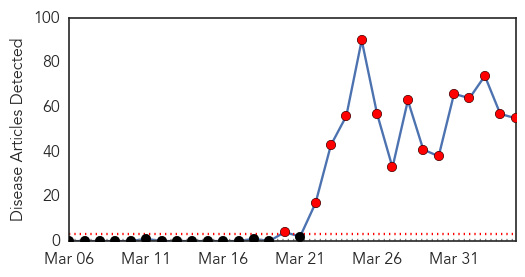
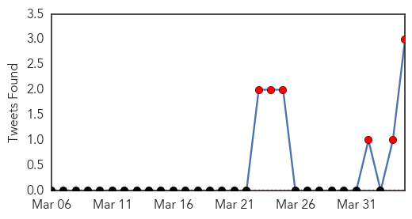
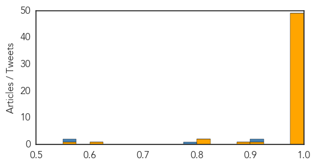

Unknown
30-Day Web Trend
0 alerts, 0 warnings

30-Day Twitter Trend
0 alerts, 0 warnings

Article Locations

Article Confidences

Top Articles:
- 0.922
- Scarlet fever cases rise to weekly high in England
- 0.917
- Chicago Tribune
- 0.902
- Man dies in France after contracting rabies
- 0.886
- Hong Kong Health Boss Suggests Live Poultry Ban for Bird Flu Control
- 0.866
- Calif. state senator indicted on corruption, gun trafficking charges
- 0.866
- Gazprom says Russian gas exports to Europe up 2.4 pct in Q1 y
- 0.814
- China facing increasing vector-borne disease risk
- 0.789
- Man dies in Paris after contracting rabies in Mali
- 0.780
- Health Protection Scotland probes scarlet fever outbreak
- 0.759
- Drought worsens food crisis in poverty-stricken Haiti - Haiti
- 0.714
- China facing increasing vector-borne disease risk
- 0.699
- Pink eye outbreak shuts schools in American Samoa
- 0.660
- Rabies kills man in France after visit to Mali
- 0.643
- Réformer l'UEM pour enrayer la montée de la pauvreté
- 0.626
- CDC warns of new risk related to e-cigarettes
- 0.586
- Health care in danger - Violent incidents affecting the delivery of health care, January 2012 to December 2013 - World
- 0.559
- UN warns of health crisis brewing in west Myanmar. Health. Tengrinews.kz
- 0.547
- Arakan govt say they can meet food, medicine needs- DVB Multimedia Group
- 0.533
- Poisoning Caused by E-Cigarettes on the Rise : Physical Wellness : Counsel & Heal
Top Tweets:
- 0.800
- Ayer fui un d√≠a fabuloso, Que felicidad poder ser parte de d√≠as importantes en la vida de mi hija Te Amo YAY üíú
- 0.753
- Peak month” of flu activity is the month with the highest % of respiratory specimens testing positive for flu virus infection flufacts 20140404 unkno 0 0.126720069527 FluFactFriday: Flu activity peaked in late December for the 2013-14 season and began a downward trend in early Jan. 20140404 unkno 0 0.0142496828684 : “I tink dere is beauty in everything. Wat ‘normal’ ppl would perceive as ugly, I cn usually see something of beauty in it. 20140404 unkno 0 0.00740287583477 @kiayahfitness: There must be a God http://t.co/TfE3cpVVLC"
- 0.729
- Flu Fact Friday: Complications of the flu can lead to bacterial pneumonia, ear infections, sinus infections, dehydration, and worsening...
- 0.586
- Cartes recorrió instalaciones de fabrica de jeans en San Lorenzo:  El presidente de la República, Horacio Cart... http://t.co/lria2ZXZFL
- 0.535
- Lunes 07 de abril es el Día Mundial de la Salud. Enfermedades transmitidas por vectores. Anopheles es el mosquito que transmite la malaria.
- 0.518
- Un d√≠a de trabajo de provecho' üôèüí™ ya estoy con mi chiquita pero no quiero cocinar üòÇüòÇüòÇ creo que hoy invito Yo
Ebola
30-Day Web Trend
15 alerts, 0 warnings

30-Day Twitter Trend
6 alerts, 0 warnings

Article Locations

Article Confidences
Top Articles:
- 1.000
- West Africa mobilises against Ebola epidemic
- 1.000
- Guinea, Liberia, Mali fight Ebola outbreak
- 1.000
- The real reason why West Africa’s Ebola outbreak has everyone so frightened
- 1.000
- "Outbreak Is Serious " Warns Experts on Ebola Spread
- 1.000
- Ebola Is Rapidly Engulfing West Africa
- 1.000
- Ebola: Don't kiss the cadaver
- 1.000
- West Africa gears up to fight Ebola, killer fevers
- 1.000
- Ebola virus claims three victims in Mali - Daily News
- 1.000
- Ebola toll tops 85 in West Africa
- 1.000
- Ebola Outbreak: Death Toll in Coastal West Africa Reaches 84
- 1.000
- Ebola reemerges from the forest – Aetiology
- 1.000
- Deadly Ebola virus spreads beyond Guinea borders, suspected in Mali — RT News
- 1.000
- West Africa gears up to fight Ebola, killer fevers - Guinea
- 1.000
- Liberia reports suspected Ebola outbreak unconnected to Guinea (Update)
- 0.999
- Mob attacks Ebola treatment centre in Guinea, suspected cases reach Mali
- 0.999
- Mali suspects first Ebola cases as regional death toll tops 90
- 0.999
- 'Isolated' Liberian Ebola case raises fears of fresh outbreaks across West Africa
- 0.999
- Ebola cases reported in Liberia, Mali
- 0.999
- Mali suspects first Ebola cases as regional death toll tops 90
- 0.999
- UPDATE 2-Mob attacks Ebola treatment centre in Guinea, suspected cases reach Mali
- 0.999
- Mali Works to Halt Spread of Deadly Ebola Virus from Guinea
- 0.999
- Experts cast worried eye on Ebola spread
- 0.999
- Mali suspects first Ebola cases as regional death toll tops 90
- 0.999
- Ebola Victim's Family Quarantined - Liberia
- 0.999
- Mob attacks Ebola treatment centre in Guinea, suspected cases reach Mali
- 0.998
- Ebola death toll at 78; 'unprecedented epidemic'
- 0.998
- Fear and frustration as Guinea struggles to contain Ebola outbreak
- 0.998
- Deadly Ebola virus could cause an unprecedented epidemic
- 0.998
- Mali reports three possible Ebola cases - Africa
- 0.998
- U.S. traveler returning from Africa has Lassa fever, CDC says
- 0.998
- Mali suspects first Ebola cases as regional death toll tops 90
- 0.997
- Ebola outbreak in Guinea sparks fears in the Bronx
- 0.997
- Ebola kills more than 90 across West Africa as fear spreads
- 0.997
- Mali reports three suspected Ebola cases (Update)
- 0.996
- Ebola patients await death in Guinea wards
- 0.996
- Minnesota patient has W. African virus, search on for others exposed
- 0.996
- Minnesota patient has West African virus, search on for others exposed
- 0.995
- Ebola outbreak in West Africa
- 0.995
- Experts cast worried eye on Ebola spread
- 0.995
- Mali reports 3 suspected cases of Ebola amid outbreak in neighbouring Guinea
- 0.995
- Officials Fear Ebola May Have Reached Mali
- 0.995
- UPDATE 2-Mob attacks Ebola treatment centre in Guinea, suspected cases reach Mali
- 0.994
- Officials Fear Ebola May Have Reached Mali
- 0.993
- Mali suspects first Ebola cases as regional death toll tops 90
- 0.986
- Guinea: "There is a lot to do in a very short time" to contain Ebola
- 0.985
- A Patient in Minnesota Has Lassa Hemorrhagic Fever. (Don't Panic.)
- 0.985
- Ebola claims more lives in Liberia: minister
- 0.985
- Cliffs Natural Resources Inc. Stock - Yahoo! Finance
- 0.984
- Mali suspects first Ebola cases as regional death toll tops 90
- 0.902
- UNICEF-Liberia Ebola Outbreak: SitRep #10, 4 April 2014 - Liberia
Showing top 50 articles...
Top Tweets:
- 0.909
- The ebola outbreak may not be "unprecedented" relative to previous outbreaks in DRC & Uganda, but certainly unprecedented in West Africa.
- 0.780
- ebola outbreak in Guinea & Liberia is very challenging in terms of local infrastructure & experience of EVD, plus the distribution of cases